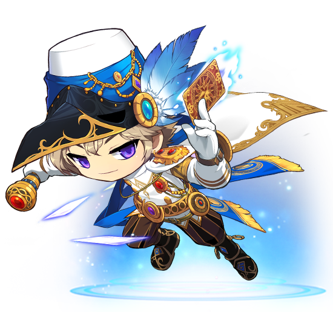

도적 영웅
팬텀
영웅들 중에서는 루미너스와 더불어 둘뿐인 다크 히어로이다.정확히 말하면 팬텀은 안티히어로에서 다크 히어로로 전향한 상태.
전향에 영향을 끼친 건 후술하겠지만 여제의 영향이 크다.
니할 사막 아리안트 출신이다. 팬텀 가문에 돈은 많지만 명예는 없는 졸부였다는 것이 언급된다. 나중에 괴도로 활동하면서 자신의 고향인 아리안트 왕의 보물을 훔쳐갔다는게 아이러니.
영웅이니까 기본적인 전투력도 상당히 출중하지만 성향은 통찰력과 손재주,
괴도의 특성, 특유의 두뇌, 자본과 응용력이 매우 강조된다.
수많은 재산으로 정보원들을 고용해 메이플 월드를 조사하거나 미리 입수한 정보와 통찰력으로 힐라의 변장을 꿰뚫었으며 위급한 상황에서 스틸 스킬로 위험 상황을 벗어나는 등
어떠한 상황이 생겨도 쉽게 당황하지 않고 자신만만하게 행동하지만 중요한 상황이 오면 진지하게 돌변하기도 한다.
이래저래 여제와 관련된 캐릭터. 전대인 아리아와는 절친한 친구 사이였으며,현 여제인 시그너스는 아리아 조카의 후손이다.
또한 비중이 그리 많지는 않지만 모험가 스토리에서 언급도 되고 직접 등장도 하는등 영웅이니만큼 캐릭터가 스토리에 영향을 주기는 하는 편.
보조무기인 카드는 그냥 종이로 된 카드처럼 보이지만 블랙헤븐에서 보면 벽이나 바닥에 박히기까지 하는 등 평범한 카드는 아닌 듯하며 이 역시도 마력이 들어간 것으로 추정된다.
